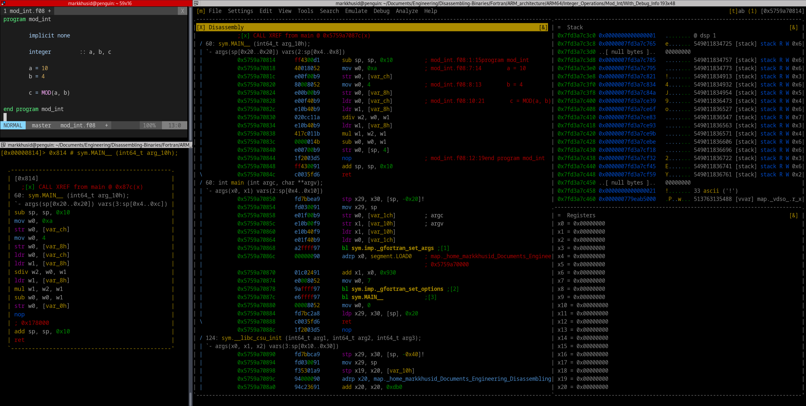

Fortran - ARM 64-Bit Platform - Modulo Two Integers#
{kind=link}
Introduction#
In this section we will be disassembling simple binaries generated by the Fortran high-level language compiled for the 64-bit ARM platform.
Project code for this section is contained in my markkhusid/Disassembling-Binaries.
The program mod_int.f08#
program mod_int
implicit none
integer :: a, b, c
a = 10
b = 4
c = MOD(a, b)
end program mod_int
The program displays the contents of the program mod_int.f08. The program creates three integers: a, b, and c. a is assigned the value of 10, b is assigned the value of 4, and c is assigned the result of the operation MOD(a, b). MOD() is a Fortran intrinsic function that returns the remainder of the division of a by b.
The program is obviously very simple, with no inputs and outputs. The idea is to generate the binary and look at the disassembly to learn about the workings of the 64-bit ARM processor platform.
The chosen test system is my trusty Samsung Chromebook Plus V2, which has a 64-bit ARMv8 processor. This is a very convenient platform for this exercise due to its availability and ease of access from multiple remote systems via SSH.
The program is compiled with the GNU Fortran compiler, gfortran, which is available on the ARM platform. The program is compiled with debugging information using the -ggdb3 option, which allows us to debug the program in GDB and see the source code interspersed with the assembly instructions.
The program is compiled with:
$ gfortran -ggdb3 mod_int.f08 -o mod_int_Fortran_aarch64_ggdb3
For general edification, we also have gfortran produce generic assembly with the -S option, an object file with the -o option, and object dumps of the object and executable files.
The generic assembly is generated by using the -S (assembly) option:
$ gfortran -S -ggdb3 mod_int.f08 -o mod_int.s
The object file is generated by using the -c (compile) option:
$ gfortran -c -ggdb3 mod_int.s -o mod_int.o
The objdump files are generated by using the following command and options:
$ objdump -x -D -S -s -g -t mod_int.o > objdump_of_dot_o.txt
$ objdump -x -D -S -s -g -t mod_int_Fortran_aarch64_ggdb3 > objdump_of_dot_exe.txt
A rundown of the objdump options is shown here:
$objdump
Usage: objdump <option(s)> <file(s)>
Display information from object <file(s)>.
At least one of the following switches must be given:
-a, --archive-headers Display archive header information
-f, --file-headers Display the contents of the overall file header
-p, --private-headers Display object format specific file header contents
-P, --private=OPT,OPT... Display object format specific contents
-h, --[section-]headers Display the contents of the section headers
-x, --all-headers Display the contents of all headers
-d, --disassemble Display assembler contents of executable sections
-D, --disassemble-all Display assembler contents of all sections
--disassemble=<sym> Display assembler contents from <sym>
-S, --source Intermix source code with disassembly
--source-comment[=<txt>] Prefix lines of source code with <txt>
-s, --full-contents Display the full contents of all sections requested
-g, --debugging Display debug information in object file
-e, --debugging-tags Display debug information using ctags style
-G, --stabs Display (in raw form) any STABS info in the file
-W, --dwarf[a/=abbrev, A/=addr, r/=aranges, c/=cu_index, L/=decodedline,
f/=frames, F/=frames-interp, g/=gdb_index, i/=info, o/=loc,
m/=macro, p/=pubnames, t/=pubtypes, R/=Ranges, l/=rawline,
s/=str, O/=str-offsets, u/=trace_abbrev, T/=trace_aranges,
U/=trace_info]
Display the contents of DWARF debug sections
-Wk,--dwarf=links Display the contents of sections that link to
separate debuginfo files
-WK,--dwarf=follow-links
Follow links to separate debug info files (default)
-WN,--dwarf=no-follow-links
Do not follow links to separate debug info files
-L, --process-links Display the contents of non-debug sections in
separate debuginfo files. (Implies -WK)
--ctf[=SECTION] Display CTF info from SECTION, (default `.ctf')
--sframe[=SECTION] Display SFrame info from SECTION, (default '.sframe')
-t, --syms Display the contents of the symbol table(s)
-T, --dynamic-syms Display the contents of the dynamic symbol table
-r, --reloc Display the relocation entries in the file
-R, --dynamic-reloc Display the dynamic relocation entries in the file
@<file> Read options from <file>
-v, --version Display this program's version number
-i, --info List object formats and architectures supported
-H, --help Display this information
In our case, we want -x (all headers), -D (disassemble all), -S (display source code with assembly), -s (full contents of all sections), -g (debug info), and finally, -t (display contents of the symbol tables).
We will now disassemble this program on the 64-bit ARM platform and step through the assembly instructions.
Disassembling mod_int_Fortran_aarch64_ggdb3#
When we look at the executable’s objdump, we notice that there are two functions of interest, one is main, and the other is MAIN__. The Fortran compiler sets up the program arguments and options in main, while the actual program is contained within MAIN__ (that is capital MAIN followed by two underscores).
The following text from the executable’s objdump illustrates this:
Disassembly of section .text:
0000000000000814 <MAIN__>:
program mod_int
814: d10043ff sub sp, sp, #0x10
implicit none
integer :: a, b, c
a = 10
818: 52800140 mov w0, #0xa // #10
81c: b9000fe0 str w0, [sp, #12]
b = 4
820: 52800080 mov w0, #0x4 // #4
824: b9000be0 str w0, [sp, #8]
c = MOD(a, b)
828: b9400fe0 ldr w0, [sp, #12]
82c: b9400be1 ldr w1, [sp, #8]
830: 1ac10c02 sdiv w2, w0, w1
834: b9400be1 ldr w1, [sp, #8]
838: 1b017c41 mul w1, w2, w1
83c: 4b010000 sub w0, w0, w1
840: b90007e0 str w0, [sp, #4]
end program mod_int
844: d503201f nop
848: 910043ff add sp, sp, #0x10
84c: d65f03c0 ret
0000000000000850 <main>:
850: a9be7bfd stp x29, x30, [sp, #-32]!
854: 910003fd mov x29, sp
858: b9001fe0 str w0, [sp, #28]
85c: f9000be1 str x1, [sp, #16]
860: f9400be1 ldr x1, [sp, #16]
864: b9401fe0 ldr w0, [sp, #28]
868: 97ffffa2 bl 6f0 <_gfortran_set_args@plt>
86c: 90000000 adrp x0, 0 <_init-0x660>
870: 9124c001 add x1, x0, #0x930
874: 528000e0 mov w0, #0x7 // #7
878: 97ffff9a bl 6e0 <_gfortran_set_options@plt>
87c: 97ffffe6 bl 814 <MAIN__>
880: 52800000 mov w0, #0x0 // #0
884: a8c27bfd ldp x29, x30, [sp], #32
888: d65f03c0 ret
88c: d503201f nop
Explaining the Dissassembly by ChatGPT 4o#
This disassembly represents the ARM AArch64 machine code for a Fortran program that performs an integer modulus operation using MOD(a, b). In AArch64, there is no single instruction for modulo, so the operation must be implemented using multiple primitive instructions.
Let’s examine in great detail why and how the compiler synthesizes MOD(a, b) using multiple instructions.
High-Level Fortran Code#
program mod_int
implicit none
integer :: a, b, c
a = 10
b = 4
c = MOD(a, b)
end program mod_int
Disassembly Overview#
0000000000000814 <MAIN__>:
This is the Fortran-compiled MAIN__ subroutine. Let’s go through it line by line, especially focusing on the MOD operation.
1. Stack Frame Setup#
814: d10043ff sub sp, sp, #0x10
Allocate 16 bytes on the stack for local variables
a,b, andc.
2. Initialize a = 10#
818: 52800140 mov w0, #0xa // w0 = 10
81c: b9000fe0 str w0, [sp, #12] // store a at sp+12
3. Initialize b = 4#
820: 52800080 mov w0, #0x4 // w0 = 4
824: b9000be0 str w0, [sp, #8] // store b at sp+8
4. Perform c = MOD(a, b)#
Here is the key section of interest:
828: b9400fe0 ldr w0, [sp, #12] // load a into w0
82c: b9400be1 ldr w1, [sp, #8] // load b into w1
830: 1ac10c02 sdiv w2, w0, w1 // w2 = a / b (integer division)
834: b9400be1 ldr w1, [sp, #8] // reload b into w1
838: 1b017c41 mul w1, w2, w1 // w1 = (a / b) * b
83c: 4b010000 sub w0, w0, w1 // w0 = a - (a / b) * b = MOD(a, b)
840: b90007e0 str w0, [sp, #4] // store result in c
Step-by-step Breakdown of MOD(a, b):#
The formula implemented is:
In ARM64:
No
modorremainderinstruction exists.We must simulate the modulus using:
Signed integer division:
sdivMultiplication:
mulSubtraction:
sub
Why multiple operations?#
There’s no native mod instruction#
Unlike some architectures (e.g., x86 with idiv producing remainder), ARM AArch64 has only sdiv, which gives you:
The quotient, but not the remainder.
To compute the modulus, we must do:
This is mathematically sound because:
Instruction-by-instruction: MOD(a, b)#
Load values:#
828: b9400fe0 ldr w0, [sp, #12] // w0 = a = 10
82c: b9400be1 ldr w1, [sp, #8] // w1 = b = 4
Integer Division:#
830: 1ac10c02 sdiv w2, w0, w1 // w2 = w0 / w1 = 10 / 4 = 2
Signed division: result in
w2 = 2
Reload b:#
834: b9400be1 ldr w1, [sp, #8] // w1 = b = 4
Multiply quotient × b:#
838: 1b017c41 mul w1, w2, w1 // w1 = 2 * 4 = 8
Subtract to get modulus:#
83c: 4b010000 sub w0, w0, w1 // w0 = 10 - 8 = 2
Store result:#
840: b90007e0 str w0, [sp, #4] // store c = 2
Function Epilogue#
844: d503201f nop
848: 910043ff add sp, sp, #0x10 // restore original stack pointer
84c: d65f03c0 ret // return
Final Stack Layout#
Offset |
Variable |
Value |
|---|---|---|
+12 |
|
10 |
+8 |
|
4 |
+4 |
|
2 |
Summary: Why Multiple Instructions Are Needed for MOD#
Operation |
ARM64 Instruction |
Purpose |
|---|---|---|
Integer Division |
|
Compute quotient |
Multiply |
|
Compute |
Subtract |
|
Get remainder: |
Because ARM64 lacks a direct mod instruction, the compiler emulates it via:#
Let me know if you’d like a version that works with negative numbers or Fortran’s MODULO() semantics (which differ subtly from MOD).
Explaining the Disassembly by Grok 4#
Overview of the Disassembly#
This disassembly is in ARM64 (AArch64) assembly language, representing the machine code generated from a simple Fortran program named mod_int. The Fortran source is provided inline for context:
program mod_int
implicit none
integer :: a, b, c
a = 10
b = 4
c = MOD(a, b)
end program mod_int
This program declares three 32-bit integers (a, b, c), assigns a = 10 and b = 4, and computes c = MOD(10, 4), which should yield 2 (the remainder of 10 divided by 4). The result is stored but not used further (e.g., no printing or return value), so the program has no visible side effects when run—it simply computes and exits.
The disassembly consists of two main functions:
MAIN__at address0x814: This is the compiler-generated name for the Fortran program’s body (common in gfortran). It allocates stack space for the three integers, performs the assignments and modulo operation, and returns.mainat address0x850: The C-style entry point for the executable, which handles command-line arguments, initializes the GNU Fortran (gfortran) runtime library, callsMAIN__, and exits with status 0.
This code was likely compiled with gfortran (evident from calls to _gfortran_set_args and _gfortran_set_options). It’s unoptimized, as seen in redundant loads (e.g., reloading b after division). The program uses 32-bit operations (w registers) for integers, matching Fortran’s default INTEGER type.
A key focus is the MOD(a, b) operation, which requires multiple instructions because ARM64 lacks a direct signed modulo instruction. Instead, the compiler implements it using signed division (sdiv), multiplication (mul), and subtraction (sub). This is a standard software emulation of modulo: a % b = a - ((a / b) * b), where / is integer division. This approach ensures correct handling of signed integers (e.g., negative values, though not used here), but it’s less efficient than a hypothetical hardware modulo. ARM64 does have unsigned divide-with-remainder (udiv + msub for multiply-subtract), but for signed operations like Fortran’s MOD, the compiler opts for this sequence to handle signs properly (using sdiv for signed division). If optimization were enabled (e.g., -O2), the compiler might inline constants or reduce redundancies, but here it’s straightforward.
I’ll explain each instruction in detail, including opcode, semantics, context, and binary encoding. ARM64 conventions: Registers x0-x30 (64-bit), w0-w30 (lower 32 bits); stack grows downward; ABI uses x0-x7 for params, x0 for returns, x29 for frame pointer, x30 for link register.
Detailed Explanation of MAIN__ (Fortran Program Logic)#
This function allocates 16 bytes on the stack (for three 4-byte integers, padded for 16-byte alignment), assigns values to a and b, computes c = MOD(a, b) via the multi-step sequence, and cleans up. The nop is likely for alignment.
814: d10043ff sub sp, sp, #0x10
Binary:d1 00 43 ff
Semantics: Subtracts0x10(16 decimal) from the stack pointersp, allocating 16 bytes of local stack space. Result written back tosp. ARM64 requires manual stack management; allocations must be 16-byte aligned.
Context: Function prologue. Reserves space foraatsp+12(4 bytes),batsp+8,catsp+4, with padding atsp+0for alignment. After this,sppoints to the frame base.818: 52800140 mov w0, #0xa
Binary:52 80 01 40
Semantics: Moves immediate0xa(10 decimal) intow0(lower 32 bits ofx0; upper bits zeroed). This is a 32-bit move immediate.
Context: Initializes a temporary fora = 10. Constants are loaded into registers before storing to memory.81c: b9000fe0 str w0, [sp, #12]
Binary:b9 00 0f e0
Semantics: Stores 32-bitw0(10) to memory atsp + 12.stris “store register”.
Context: Assigns toaon the stack. Stack offsets are positive from currentsp.820: 52800080 mov w0, #0x4
Binary:52 80 00 80
Semantics: Moves0x4(4) intow0, overwriting previous value.
Context: Initializes temporary forb = 4.824: b9000be0 str w0, [sp, #8]
Binary:b9 00 0b e0
Semantics: Storesw0(4) atsp + 8.
Context: Assigns tob.828: b9400fe0 ldr w0, [sp, #12]
Binary:b9 40 0f e0
Semantics: Loads 32-bit value fromsp + 12(10, value ofa) intow0.ldris “load register”.
Context: Loadsaintow0as the dividend for the modulo operation.82c: b9400be1 ldr w1, [sp, #8]
Binary:b9 40 0b e1
Semantics: Loads fromsp + 8(4, value ofb) intow1.
Context: Loadsbintow1as the divisor.830: 1ac10c02 sdiv w2, w0, w1
Binary:1a c1 0c 02
Semantics: Performs signed integer division:w2 = w0 / w1(10 / 4 = 2).sdivhandles negative numbers by rounding toward zero (FortranMODsemantics require this for consistency with positive/negative remainders). No remainder is produced directly.
Context: First step of modulo: Compute quotientq = a / b(stored inw2). This is necessary because ARM64 has no single-instruction signed modulo.sdivis used overudiv(unsigned) to match Fortran’s signed integer behavior.834: b9400be1 ldr w1, [sp, #8]
Binary:b9 40 0b e1
Semantics: Reloadsb(4) fromsp + 8intow1.
Context: Preparesbfor multiplication. This reload is redundant (w1already heldbbeforesdiv), likely due to no optimization; an optimized build might eliminate it.838: 1b017c41 mul w1, w2, w1
Binary:1b 01 7c 41
Semantics: Multipliesw1 = w2 * w1(2 * 4 = 8).mulis integer multiplication, with overflow wrapping (but no issue here).
Context: Second step of modulo: Computeq * b(quotient times divisor). This reconstructs the largest multiple ofbless than or equal toa(for positive values).83c: 4b010000 sub w0, w0, w1
Binary:4b 01 00 00
Semantics: Subtractsw0 = w0 - w1(10 - 8 = 2). Integer subtraction without borrow flags checked.
Context: Final step of modulo: Remainderr = a - (q * b). This yields the modulo result (2). The multi-step process is needed because:ARM64’s integer division instructions (
sdiv,udiv) only produce the quotient, not the remainder.For signed modulo, the compiler must ensure the remainder has the sign of the dividend (Fortran
MODrule: remainder same sign asa), whichsdiv+mul+subachieves.Hardware support for remainder exists in some forms (e.g.,
msubfor multiply-subtract in unsigned contexts), but for signed ops, this sequence is portable and safe.Alternatives like bit manipulation or loops aren’t efficient for general cases. If
bwere a power of 2, the compiler might optimize to AND (e.g.,MOD(a, 4) = a & 3), but hereb=4is constant—unoptimized code doesn’t exploit that.Edge cases (e.g.,
b=0causes divide-by-zero trap insdiv; negativeaorb) are handled implicitly bysdiv’s signed semantics.
840: b90007e0 str w0, [sp, #4]
Binary:b9 00 07 e0
Semantics: Storesw0(2) atsp + 4.
Context: Assigns result toc. Stored but unused—Fortran doesn’t require using variables.844: d503201f nop
Binary:d5 03 20 1f
Semantics: No operation—advances program counter without effect. Often for alignment (instructions 4-byte aligned) or padding.
Context: Compiler-inserted; no functional role, possibly after inlining checks.848: 910043ff add sp, sp, #0x10
Binary:91 00 43 ff
Semantics: Adds0x10tosp, deallocating the frame.
Context: Epilogue—restores caller’s stack.84c: d65f03c0 ret
Binary:d6 5f 03 c0
Semantics: Returns by jumping tox30(link register). No explicit return value.
Context: EndsMAIN__.
Detailed Explanation of main (Program Entry Point)#
This is the runtime wrapper for Fortran executables. It processes args, sets up gfortran, calls MAIN__, and exits. Similar to the previous disassembly, with minor address differences.
850: a9be7bfd stp x29, x30, [sp, #-32]!
Semantics: Allocates 32 bytes (pre-index subtract), stores frame pointerx29and linkx30at newsp.
Context: Prologue—saves caller state, allocates for locals (argc at +28, argv at +16).854: 910003fd mov x29, sp
Semantics: Setsx29to currentspfor frame-relative access.
Context: ABI frame pointer setup.858: b9001fe0 str w0, [sp, #28]
Semantics: Storesw0(argc) locally.
Context: Saves argument count.85c: f9000be1 str x1, [sp, #16]
Semantics: Storesx1(argv) locally.
Context: Saves argument vector.860: f9400be1 ldr x1, [sp, #16]
Semantics: Loads argv intox1for call.
Context: Prepares second arg for runtime.864: b9401fe0 ldr w0, [sp, #28]
Semantics: Loads argc intow0.
Context: Prepares first arg.868: 97ffffa2 bl 6f0 <_gfortran_set_args@plt>
Semantics: Calls gfortran arg setup via PLT (dynamic link).
Context: Passes args to Fortran runtime for handling (e.g., if program usedCOMMAND_ARGUMENT_COUNT).86c: 90000000 adrp x0, 0
Semantics: Loads page base (0 here) intox0.
Context: Prepares for options address computation.870: 9124c001 add x1, x0, #0x930
Semantics: Adds0x930(2352) tox0, result inx1(points to options data).
Context: Address of gfortran options array.874: 528000e0 mov w0, #0x7
Semantics: Moves 7 intow0(likely option count).
Context: Arg for options call.878: 97ffff9a bl 6e0 <_gfortran_set_options@plt>
Semantics: Calls gfortran options setup.
Context: Configures runtime (e.g., error modes, precision).87c: 97ffffe6 bl 814 <MAIN__>
Semantics: Calls Fortran body.
Context: Executes the program.880: 52800000 mov w0, #0x0
Semantics: Setsw0to 0 (exit success).
Context: Prepares exit code.884: a8c27bfd ldp x29, x30, [sp], #32
Semantics: Loadsx29/x30, deallocates 32 bytes (post-index add).
Context: Epilogue—restores state.888: d65f03c0 ret
Semantics: Returns to OS with code 0.
Context: Program end.88c: d503201f nop
Semantics: Padding nop, possibly for section alignment.
Overall, the program computes but discards the modulo result. Running it produces no output. The multi-op modulo is a compiler choice for correctness and portability on ARM64.